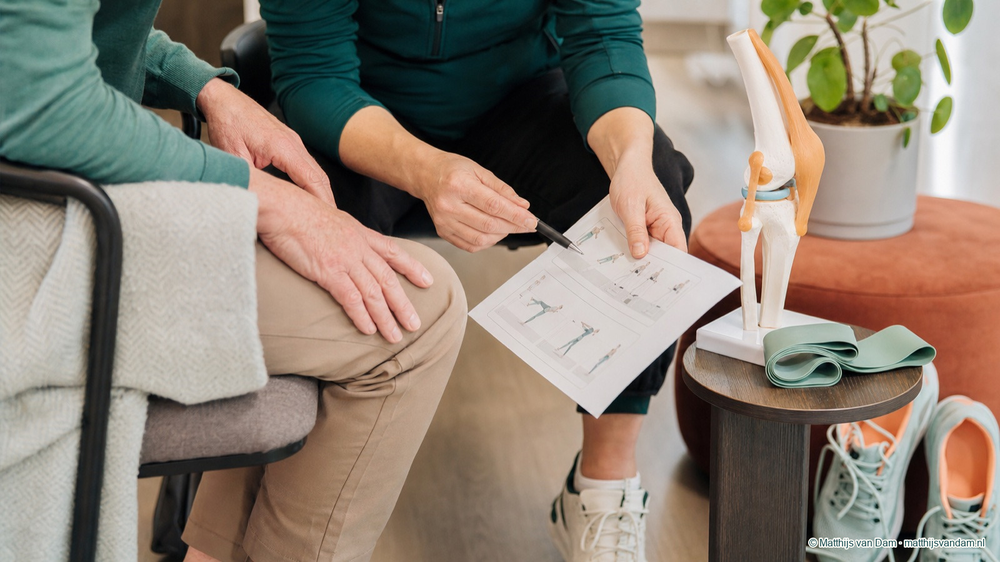

Artikel voor zorgprofessionals
Leefstijlzorg in de tweede lijn: zorgvuldig signaleren en verbinden
Leefstijl krijgt steeds meer aandacht binnen reguliere zorg. Voor de tweede lijn vraagt dat om een precieze rol: niet overnemen wat elders beter past, maar wel herkennen, bespreken en verbinden wanneer leefstijl invloed heeft op klachten, behandeling of herstel.
Dit artikel is bedoeld als professionele beschouwing. Het is geen beleidsstandpunt namens het ETZ en ook geen pleidooi om leefstijlzorg zonder randvoorwaarden naar de tweede lijn te verplaatsen.
Waarom dit onderwerp in de tweede lijn terugkomt
In de orthopedie komen leefstijlfactoren vaak indirect ter sprake. Niet als losstaand doel, maar omdat belastbaarheid, pijn, conditie, slaap, voeding, gewicht, motivatie en herstel elkaar kunnen beïnvloeden. Bij artrose kan dat gesprek relevant zijn, zeker wanneer iemand beperkt wordt in bewegen of wanneer operatie, revalidatie of niet-operatieve zorg wordt overwogen.
Tegelijk is voorzichtigheid nodig. Een poliklinisch consult is geen leefstijlprogramma. Een specialistisch behandeltraject is ook niet automatisch de plek waar langdurige leefstijlbegeleiding moet worden georganiseerd. De tweede lijn kan vooral waarde hebben door goed te signaleren, het gesprek respectvol te openen en de verbinding te leggen met passende ondersteuning.
Geen nieuwe taak zonder randvoorwaarden
De Coalitie Leefstijl in de Zorg beschrijft leefstijl als onderdeel van reguliere zorg, maar juist implementatie vraagt om randvoorwaarden. Denk aan tijd, scholing, duidelijke verwijsroutes, regionale beschikbaarheid, digitale ondersteuning, terugkoppeling en afspraken over wie welke rol heeft. Zonder die randvoorwaarden kan leefstijlzorg gemakkelijk voelen als een extra opdracht voor professionals die al onder druk staan.
Daarom is de vraag niet of de tweede lijn "meer leefstijl moet doen". De betere vraag is: welke minimale, haalbare en passende rol helpt patiënten verder zonder verantwoordelijkheden onduidelijk te maken? Soms is dat uitleg. Soms is dat verwijzen. Soms is dat een warme overdracht naar een leefstijlzorgloket, huisartsenzorg, fysiotherapie, diëtetiek, GLI-aanbod of ondersteuning in het sociaal domein.
Een passende rol voor de orthopedie
Binnen orthopedische zorg kan leefstijl vooral functioneel worden besproken: wat helpt iemand om beter belastbaar te blijven, veiliger te bewegen, zich beter voor te bereiden op behandeling of realistischer naar herstel te kijken? Dat gesprek hoeft niet moraliserend te zijn. Juist bij artrose en obesitas is het belangrijk om taal te gebruiken die erkent dat gedrag, pijn, omgeving, werk, mentale belasting en lichamelijke mogelijkheden met elkaar samenhangen.
Een zinvolle tweede-lijnsrol kan bestaan uit drie stappen: het onderwerp signaleren wanneer het medisch relevant is, kort uitleggen waarom het relevant is voor functioneren of herstel, en daarna verwijzen naar een plek waar begeleiding beter past. Daarmee blijft de specialistische zorg bij haar kern, terwijl leefstijl niet buiten beeld verdwijnt.
Van ambitie naar uitvoerbaarheid
Leefstijlzorg werkt alleen als de route voor patiënten en professionals begrijpelijk is. Een digitaal zorgpad kan helpen om informatie, vragenlijsten en verwijzingen overzichtelijk te maken, maar vervangt geen regionale afspraken. De waarde ontstaat pas wanneer ziekenhuiszorg, eerste lijn en lokale ondersteuning elkaar aanvullen.
Voor zorgprofessionals is dat misschien de belangrijkste nuance: leefstijlzorg in de tweede lijn is geen pleidooi voor taakverschuiving zonder grenzen. Het is een pleidooi om de momenten waarop leefstijl ertoe doet zorgvuldig te benutten, met oog voor haalbaarheid, patiëntperspectief en de organisatie van zorg rondom de patiënt.
Bronnen: Coalitie Leefstijl in de Zorg, over de coalitie. Zie ook de implementatievoucher Gezamenlijke aanpak van artrose en obesitas in Tilburg.
Verder lezen
Ook relevant voor zorgprofessionals
Zorgprofessionals
Artrosezorg in transitie: wat vraagt dit van professionals?
Professionele duiding over netwerkzorg, implementatie en digitale monitoring.
Lees artikel
Onderzoek
Leefstijlcoalitie-voucher voor digitale artrosezorg in Tilburg
Over implementatie van een digitale aanpak met ziekenhuis- en regiopartners.
Lees artikel